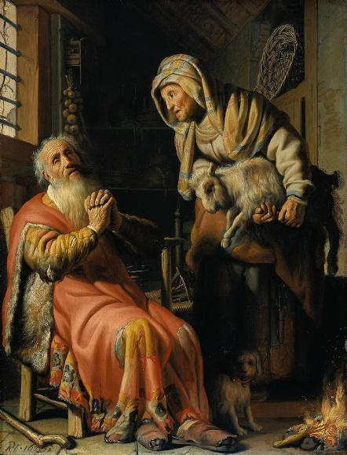
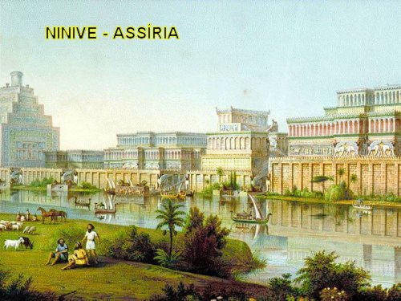
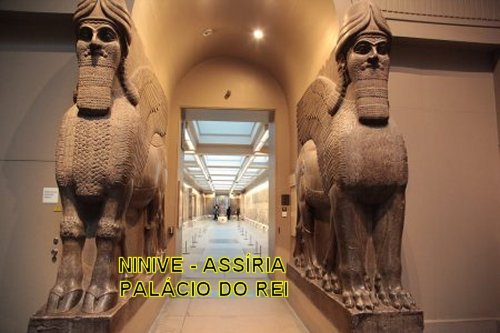
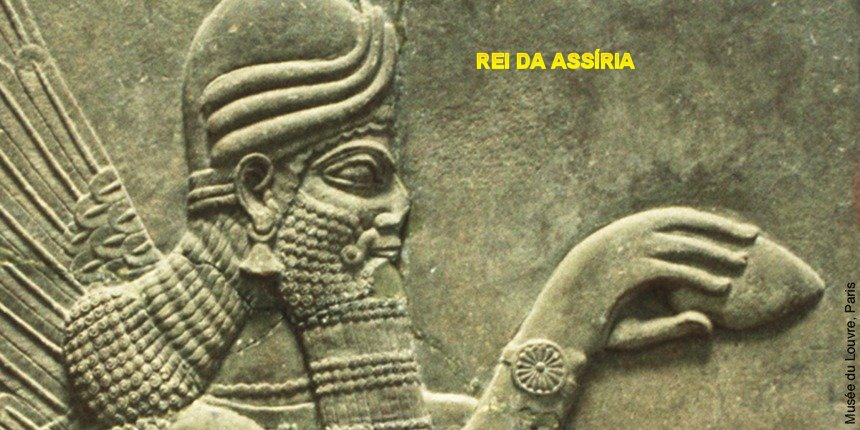
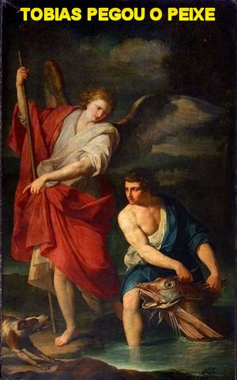
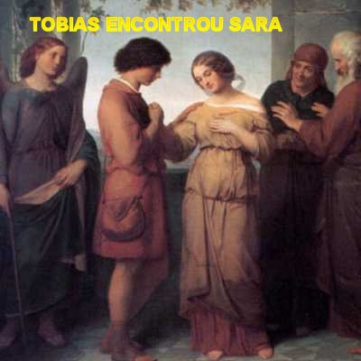
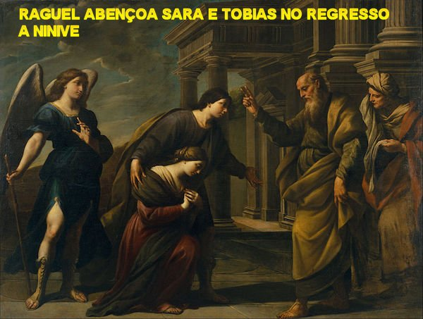
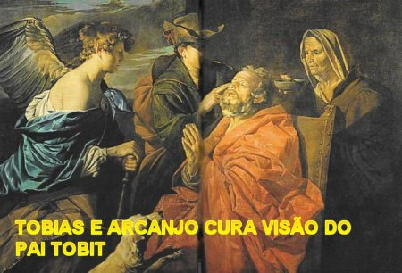
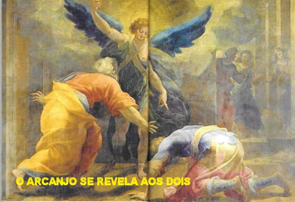
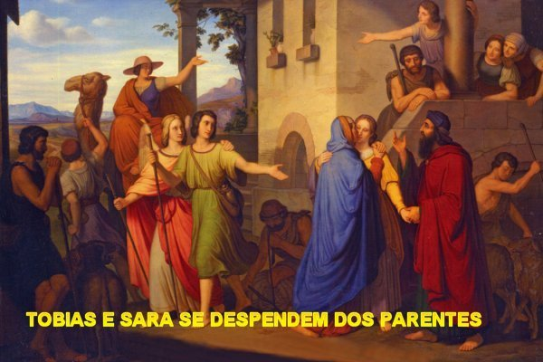

HISTÓRIA DE TOBIT
INÍCIO DA VIDA
Tobit nasceu e viveu em Neftali
no Norte da Galileia, em Israel. Era um homem misericordioso e verdadeiramente
piedoso, com o coração repleto de bondade. 
Chegando a idade adulta se casou com uma parenta de nome Ana, com quem teve um filho chamado Tobias.
Embora fosse um homem trabalhador e responsável, que gostava de cativar a amizade e o companheirismo com todas as pessoas, muitas vezes Tobit sofria desagradáveis decepções, originadas pela inveja de alguns e nos interesses escusos de outros, pessoas do mundo que existem em todos os lugares, e que maldosamente queriam denegrir o seu caráter, e por isso, foi traído por um dos seus próprios compatriotas.
Tobit tinha no coração uma admirável piedade de sepultar os judeus mortos que encontrasse. Certo dia, um auxiliar do palácio viu que ele realizava um sepultamento e o denunciou ao rei com malícia, dizendo que ele sepultava infiéis do reino. Sabendo da delação por amigos verdadeiros, e para não sofrer a punição real, foi obrigado a fugir para o Tisbe, na Alta Galiléia, onde passou a viver sozinho, longe da família, para evitar a sua prisão. Quando retornou, o rei era outro, e então, pode reencontrar a família e viver normalmente como todas as pessoas. Mas, por pouco tempo, porque depois, envolvido em outras intrigas, foi deportado para a Assíria, e o decreto real não permitia que ele retornasse a Israel. Então decidiu viver com a família definitivamente na cidade de Nínive.
VIVENDO NA ASSÍRIA
Sendo um homem trabalhador, inteligente e de vastíssimo conhecimento, que sempre buscou com prioridade manter a sua correta fidelidade a DEUS, manifestando em todas as oportunidades o seu sincero e dedicado amor ao SENHOR, o DEUS ALTÍSSIMO lhe concedeu a graça, a simpatia e o favor diante do rei Salmanasar, sendo por isso convidado pelo monarca, que o fez Procurador do reino da Assíria. E assim, passou a viajar sucessivamente para a Média e lá administrou corretamente e com eficiência os negócios do rei até a morte do monarca. Tendo um bom salário, dava muitas esmolas, principalmente aos judeus famintos e aqueles conterrâneos pobres quase nus, que viviam em Nínive, e quando sabia que existia algum cadáver de judeu abandonado e jogado fora das muralhas, ia lá e o sepultava com dignidade.
VIAGENS A MÉDIA
Nas viagens a trabalho que realizou pela Média, ao longo dos anos e a serviço do reino da Assíria, ele além de cumprir dignamente com alto proveito a sua missão de Procurador trazendo muitos benefícios a Assíria, também, por sua inteligência viva e notável desempenho, ganhou muito dinheiro e depositou as suas economias em Rages, uma cidade da Média onde morava o seu parente Gabael, irmão de Gabri, com o qual deixou guardados sacos de prata contendo dez talentos. Eram economias que precisavam ser bem protegidas. Só para se ter uma idéia, um talento de prata equivalia a um peso de aproximadamente 44 quilos. Então dez talentos de prata pesavam cerca de 440 quilos, ou seja, quase meia tonelada de prata. Era muito dinheiro naquela ocasião.
SUCESSÃO NO REINO

Todavia aconteceu que menos de 40 dias após esta ocorrência, o rei foi assassinado por dois dos seus filhos, que logo fugiram para o Monte Ararat. Então assumiu o poder um terceiro filho, Asaradon, que era um rapaz honesto e trabalhador. Ele colocou Aicar, que era um homem de valor, filho de Anael e parente (sobrinho) de Tobit, como Superintendente das Finanças do Reino, de modo que Aicar passou a dirigir toda a Administração da Assíria. E também, intercedeu por Tobit que pode voltar a viver normalmente em Nínive, e reaver a sua residência com sua esposa Ana e o seu filho Tobias.
A CEGUEIRA
Na Festa das Semanas, conforme o hábito judaico, ele comemorou em casa junto com sua família, e sua esposa Ana, que preparou um excelente almoço. Todavia, antes da refeição, chamou o filho Tobias e recomendou: “Filho, vai procurar, entre os nossos irmãos deportados em Nínive, algum pobre de coração fiel, e traze-o aqui para comer conosco. Esperar-te-ei até que voltes meu filho”. (Tb 1, 2-2)
Quando o filho voltou e deu a notícia ao pai dizendo que um homem do povo judeu foi assassinado, estrangulado e lançado na praça do mercado, Tobit ficou pesaroso e imediatamente se levantou, antes de almoçar, e pegou o homem e o colocou num quarto, a fim de esperar o por do sol para enterrá-lo, de acordo com a lei dos judeus. Voltou para casa, lavou as mãos e em companhia da família almoçaram envolvido pela tristeza daquele crime.
Naquela noite, Tobit depois do
banho, deitou junto ao muro, no pátio interno da casa, com o rosto descoberto
por causa do calor. Ele não reparou que havia pardais 
HISTÓRIA DE SARA
Nesta mesma época dos fatos descritos acima, Raguel, parente de Tobit que era casado com Edna, vivia na Média, numa cidadezinha de nome Ecbátana e tinha uma filha chamada Sara, que estava com um incontrolável drama, um problema abominável que entristecia e roubava a tranquilidade dela e de toda a família, porque não se conseguia encontrar uma solução para o caso da jovem: Sara, estava dominada pelo terrível demônio Asmodeu, inimigo da união conjugal, que matava os seus maridos na mesma noite de núpcias. E assim, Sara que ansiava por constituir uma família e ter os seus filhos, ficava frustrada presenciando o abominável e cruel demônio não permitir a concretização do seu ideal de mulher. Ela já havia contraído matrimônio sete vezes, com festa e com o maior regozijo dos parentes, acendendo sua esperança de realizar o seu sonho, mas na noite nupcial, quando os esposos se unem para concretizar o enlace matrimonial segundo a Lei de DEUS, o diabo Asmodeu não permitia a união, dominava a alma de Sara e matava o seu marido. E assim procedendo Asmodeu, matou todos os seus sete esposos.
O acontecimento era tão grave, que a noticia circulou e ultrapassou aquela região, sendo divulgada em muitas outras localidades. Sara sofria com os boatos e inclusive, com as muitas maldades e ofensas. Pois ocorreu, que certas pessoas com índole inflamada, a criticavam e a censuravam abertamente. Numa ocasião, ela teve até que ouvir insultos de uma das servas do seu pai, que lhe disse: “És tu que matas teus maridos! Já foste dada a sete homens e não foste feliz sequer uma vez! Queres castigar-nos por terem morrido os teus maridos? Vai procurá-los e que nunca se veja de ti filho e nem filha”! (Tb 3, 8-9)
A jovem Sara se afastava de todos, andava tão deprimida que até pensou em se suicidar. Mas, conseguiu se controlar. Certo dia estando demasiadamente triste entrou no seu quarto e chorou intensamente. Depois, de joelhos no chão, pediu perdão ao SENHOR pelos seus muitos desacertos e pecados, e suplicou a infinita misericórdia de DEUS para a sua vida. Ela não queria ser diferente. Queria ser uma mulher igual as outras, construir sua família e poder amar ao SENHOR DEUS com todas as forças e a maior energia do seu coração. Ela sonhava em possuir uma família!
Na eternidade, no momento certo, foi ouvida na Glória de DEUS a oração de ambos, de Tobit em Nínive e de Sara em Ecbátana, e o SENHOR determinou que o Arcanjo Rafael viesse curar os dois. E justamente, naquele exato momento, Tobit em sua casa rezava e suplicava pela misericórdia do SENHOR, e Sara, concluída as suas orações descia do seu quarto, para ajudar sua mãe Edna, nas atividades domésticas do lar.
TOBIT CHAMA SEU FILHO

Neste mesmo tempo, sua esposa Ana, mãe de Tobias, para ajudar na manutenção do lar, começou a realizar trabalhos para fora: fiava lã e recebia tela para tecer, recebendo o dinheiro correspondente ao seu trabalho.
Foi quando Tobit também se lembrou do dinheiro que havia deixado depositado com Gabael, seu parente que morava em Rages, na Média, e pensou consigo: “Já estou desejando morrer; seria bom chamar o meu filho Tobias para lhe falar sobre esse dinheiro, antes de morrer”. (Tb 4, 2)
Instruiu Tobias, que embora sendo um jovem rapaz com 15 a 16 anos de idade, se entusiasmou com a idéia da viagem e de enfrentar aquela aventura, a fim de reaver o dinheiro do seu pai. Tobit sempre carinhoso e preocupado com o seu filho único lhe fez muitas admoestações e o orientou com sábios conselhos: pedindo que ele guardasse e praticasse fervorosamente a religião, obedecendo aos Mandamentos e Preceitos de Moisés; que procurasse exercitar a caridade para com os pobres e cultivasse a harmonia no viver; quando pensasse em se casar, desse preferência aos teus irmãos da tua raça e do teu povo, não se casasse com mulher de outras tribos; também recomendou que ele não se ensoberbecesse com algum destaque que viesse alcançar na vida, não se tornando orgulhoso. Mandou que ele arranjasse uma pessoa que conhecesse a região da Média, para guiá-lo, a fim de tornar a viagem mais segura e tranquila. “Quero lhe dizer, meu filho, que deixei em depósito com Gabael, dez talentos de prata. Não te preocupes filho, se ficamos pobres. Tens uma grande riqueza se temes a DEUS, se evitas toda espécie de pecado e se fazes o que agrada ao SENHOR teu DEUS”. (Tb 4, 20-21). Antes de concluir a conversa, Tobit explicou como havia combinado com Gabael a respeito dos talentos que deixou guardado com ele: os dois, cada um fez um documento, que foi rasgado ao meio, de modo que cada um ficou com a metade dos dois documentos. Tobit com a metade do seu e a metade do de Gabael; e ele, Gabael, ficou com a outra metade do documento de Tobit, e com a metade do seu, e naturalmente guardando o dinheiro de Tobit. Assim, ele pode mostrar ao filho as duas metades que ficaram com ele referentes aos dez talentos, e ordenou ao filho, que fosse recebê-lo do seu parente Gabael.
PROJETO DA VIAGEM
O filho, que não sabia o caminho para a Média, e não conhecia nenhuma pessoa que o pudesse conduzir, saiu à procura de um companheiro, e então, graças à Providência Divina, encontrou o Arcanjo Rafael na rua, se apresentando como uma pessoa comum, com um semblante humano e usando o nome de Azarias, filho de Ananias parente e compatriota do próprio Tobias. Perguntou Tobias: “Conheces o caminho da Média? Respondeu o Arcanjo Rafael: Sim, muitas vezes eu estive lá e conheço todos os caminhos. Fui a Média com frequência e hospedei-me na casa de Gabael, nosso irmão, que mora em Rages, na Média. São dois dias de viagem entre Ecbátana e Rages, pois Rages está situada na montanha e Ecbátana na planície".(Tb 5, 5-6).
Depois daquelas palavras iniciais, Tobias estava feliz com aquele encontro, e levou o Anjo para conhecer o seu pai, pois Tobit queria saber a que família Azarias (o Arcanjo) pertencia e se era digno de confiança para acompanhar o seu filho. E a conversa foi assim:
O Anjo entrou e Tobit o saudou primeiro; o Anjo respondeu: “Desejo-te grande alegria”. Disse Tobit: “Que alegria posso ainda ter? Estou cego e não posso ver a luz do Céu; estou mergulhado nas trevas como os mortos que não contemplam a luz; vivo como um morto; ouço a voz das pessoas, mas não as vejo”. Disse-lhe o Anjo: “Tem confiança, que DEUS em breve te curará. Tem confiança”! Tobit lhe disse: “Meu filho Tobias quer ir à Média. Podes ir com ele e lhe servir de guia? Eu te darei teu salário, irmão”. O Arcanjo respondeu: “Posso ir com ele, pois conheço detalhadamente todos os caminhos e fui frequentes vezes à Média, percorri todas as suas planícies e as suas montanhas e conheço todas as suas veredas”. Disse-lhe Tobit: “Irmão, de que família e de que tribo és tu? Fala, irmão”. Respondeu-lhe o Anjo: “Que importa a minha tribo”? Tobit insistiu: “Gostaria de saber com segurança de quem és filho e qual é o teu nome”. Respondeu-lhe o Anjo: “Sou Azarias, filho do grande Ananias, um de teus irmãos”. Disse-lhe Tobit: “Bem-vindo, irmão, salve! Não leves a mal, irmão, meu desejo de conhecer com certeza teu nome e tua família; acontece que és parente meu e pertence a uma família honesta e honrada. Conheci Ananias e Natã, os dois filhos do grande Semeias; eles iam comigo a Jerusalém, juntos lá adorávamos, e eles não se desviaram do bom caminho. Teus irmãos são homens de bem; descendes de ilustre estirpe. Sê bem-vindo”! E acrescentou: “Pagar-te-ei como salário uma dracma por dia, e dar-te-ei, como a meu filho, o que te for necessário. Viaja, pois, com meu filho, e depois ainda acrescentarei algo ao teu salário”. (Tb 5,10-16)
E assim, acertaram os detalhes finais do compromisso; depois de tudo combinado, no dia seguinte, pela manhã, Azarias (o Arcanjo São Rafael) e o jovem Tobias saíram cedo pela estrada, apenas acompanhados do cachorro de estimação da família.
O PEIXE DO RIO TIBRE

Chegando próximo a Média, Tobias conversando com o Arcanjo, perguntou: “Azarias, meu irmão, que remédio há no coração, no fígado e no fel do peixe”? O Arcanjo respondeu: “Queimando o coração e o fígado do peixe diante de qualquer pessoa atormentada por um demônio ou por um espírito mau, a fumaça afugenta todo o mal e o faz desaparecer para sempre. Quanto ao fel, ele é indicado para untar os olhos de uma pessoa que tem manchas brancas (albugínea ocular), e soprando sobre as manchas elas serão removidas, e a pessoa fica curada”.
ENTRANDO NA MÉDIA
Já entrando na cidadezinha de Ecbátana o Arcanjo falou: “Tobias meu irmão, esta noite ficaremos na casa de Raguel, seu parente. Ele e sua esposa Edna tem somente uma filha de nome Sara, que é uma moça prudente, corajosa e muito bonita e que é muito amada pelos pais”. Tobias respondeu: “Azarias, meu irmão, ouvi dizer que ela já foi dada em casamento sete vezes e que todos morreram na noite de núpcias. Morriam ao se aproximar dela no leito nupcial. E também ouvi dizer que é um demônio quem mata os esposos”. O Arcanjo explicou: “Ouve-me irmão, não tenhas medo deste demônio, você vai ver Sara e ficará apaixonado por ela, porque de fato, ela é uma mulher muito bonita e repleta de preciosas virtudes, além de pertencer ao mesmo ramo da sua família. E para protegê-lo da inveja e artimanhas de satanás, nos possuímos armas muito mais poderosas.”

Tobias ouvindo as razões expostas pelo Arcanjo Rafael, e sabendo que Sara era da linhagem da casa do seu pai, ficou ansioso em conhecê-la, porque o seu coração já revelava uma simpática aceitação por ela.
Chegaram à casa de Raguel e a alegria inundou o coração de todos. Sorrindo e com afetuoso júbilo Raguel disse a sua esposa: “Edna, como esse rapaz se parece com meu irmão Tobit”. (Tb 7, 2). E durante largo tempo conversaram e atualizaram as noticias da família que há tantos anos não se encontravam.
Depois, Edna chamou as domésticas que lhe auxiliava, matou dois carneiros do rebanho e preparou um digno e saboroso almoço. A família ali reunida se assentou a mesa, mas, antes de iniciarem a refeição, Tobias que seguidamente olhava Sara, disse ao Arcanjo: “Azarias, meu irmão, dize a Raguel que me dê por esposa minha irmã Sara”. Raguel que estava próximo ouviu as palavras e disse ao jovem: “Come e bebe e passa a noite tranquilo, porque ninguém, a não ser tu, meu irmão, tem o direito de desposar a minha filha Sara”. Mas Tobias queria ouvir a palavra com mais clareza e o evidente consentimento, por isso, falou:“Tio o senhor podia ser mais claro”? Raguel disse: “Sim Tobias, recebe a tua irmã. A partir de agora, tu és seu irmão e ela é tua irmã. Que o SENHOR do Céu vos faça felizes esta noite, filho, e vos dê a sua graça e sua paz”.
Raguel chamou sua filha Sara, tomou-a pela mão e a entregou a Tobias, dizendo: “Recebe-a, pois ela te é dada por esposa, segundo a Lei e a sentença escrita no Livro de Moisés. Leve-a feliz para a casa de teu pai. E que DEUS do Céu vos guie em paz pelo bom caminho”. (Tb 7, 12) Depois chamou a sua esposa e lhe pediu uma folha de papiro, onde foi redigido o Contrato de Casamento e todos assinaram. A seguir, com muita alegria, foram saborear o magnífico almoço, que afinal, se tornou um verdadeiro banquete de casamento.
Terminada a festa, conduziram os jovens noivos ao quarto que a senhora Edna preparou carinhosamente. Tobias recordando-se dos conselhos do seu amigo e “guia Azarias”, pegou a sacola da viagem onde trazia devidamente bem acondicionado o fígado e o coração do peixe, e os colocou sobre as brasas do defumador que já se encontrava no quarto. A fumaça se espalhou pelo ambiente e o cheiro do peixe expulsou o demônio Asmodeu, que imediatamente fugiu para as regiões elevadas do Egito. O Arcanjo São Rafael o seguiu, prendeu-o e o acorrentou imediatamente. E no quarto, Tobias e Sara se ajoelharam e rezaram, agradecendo ao SENHOR todos os acontecimentos e ofereceram a DEUS as suas vidas.
No dia seguinte a alegria da família era exuberante, verdadeiramente Sara e Tobias estavam casados segundo a Lei de DEUS, e em breve nasceriam os herdeiros. O SENHOR destruiu a maldição que o diabo tinha envolvido Sara. Agora pela vontade Divina, que enviou o Arcanjo São Rafael, o demônio foi preso e acorrentado e Sara era uma mulher absolutamente normal.
Raguel chamou Tobias e lhe disse: “Nos próximos dias não sairás daqui, mas ficarás comendo e bebendo em minha casa, e encherás de gozo a alma de minha filha após todas as suas tristezas. Depois tomarás a metade de tudo quanto aqui possuo e voltarás feliz à casa do teu pai. E quando minha mulher e eu tivermos morrido, também será tua a outra metade. Tem confiança, filho! Sou teu pai, e Edna é tua mãe; junto a ti e junto a tua irmã Sara estaremos, desde agora e para sempre”!(Tb 8, 20-21)
Neste mesmo dia, Tobias chamou o Arcanjo e lhe arranjou quatro criados e dois camelos a fim de que ele fosse a Rages e encontrasse o seu parente Gabael, lhe entregasse o documento do seu pai Tobit e retirasse o dinheiro, arrumando nos dois camelos os 10 talentos, ou seja, os quase 500 quilos de prata. E assim foi feito. Na volta, o parente Gabael quis acompanhar Azarias (o Arcanjo) até Ecbátana para conhecer e se encontrar com Tobias. E viajaram juntos. No encontro, foi outra festa, a alegria transbordou daqueles corações fieis e verdadeiramente amigos.
Enquanto aconteciam estes fatos, Tobit em Nínive diariamente contava os dias, ansioso pelo regresso do filho. Mas, os dias passavam e nenhuma noticia de Tobias chegava. O casal Tobit e Ana, já idosos choravam e sofriam com a ausência do filho.
Mas, no momento certo Tobias
conversou com Raguel e Edna, a respeito da sua longa permanência, dizendo-lhes que
precisava regressar, pois os seus pais já deviam estar 
RETORNO A NÍNIVE
Foi formada uma grande caravana para a viagem, com os camelos e demais animais, vigiados pelos servos e servas da família. Vinham vagarosamente na frente, montados em seus camelos dromedários: Sara, Tobias e o Arcanjo São Rafael. Quando chegaram a Caserin, que está próximo a Nínive, disse o Arcanjo: “Lembras a situação em que deixamos teu pai; corramos à frente para preparar a casa, antes que sua esposa chegue com os outros”. O Arcanjo ainda falou: “Leva contigo o fel”. E o cão de estimação da família que sempre os acompanhava, seguiu atrás deles.
Ana, a mãe que ansiosamente esperava o retorno do filho, neste dia estava sentada, observando o caminho por onde um dia o seu querido Tobias ia voltar. De súbito, ela teve um pressentimento e disse a Tobit: “Pressinto que o nosso filho está chegando com o seu companheiro”...
A viagem permitiu Tobias crescer e amadurecer. Ele que era uma criança com cerca de 15 anos de idade, tornou-se um homem forte e inteligente. Foram 4 anos de caminhada, de buscas e emoções.

A mãe quando viu os dois na estrada, correu e fervorosamente abraçou Tobias dizendo: “Finalmente te revejo, meu filho, agora posso morrer”. Tobit se levantou e meio tropeçando deu uns passos, mas logo Tobias com sua mãe que chorava de alegria e emoção, vieram ao seu encontro e o abraçaram carinhosamente, e o filho, tendo na mão o fel de peixe, soprou nos olhos do pai, e disse: “Tem confiança, pai”! Aplicou-lhe o remédio e esperou. Depois, com a mão cuidadosamente tirou-lhe as escamas dos cantos dos olhos... Então seu pai alegremente o abraçou e chorando, exclamou: “Agora te vejo filho, luz dos meus olhos”! E disse mais: “Bendito seja DEUS! Bendito seja o seu grande Nome! Benditos sejam todos os seus Santos Anjos! Bendito seja o SENHOR DEUS de incomensurável bondade que se compadeceu de mim, e agora vejo o meu filho Tobias”!
Foi uma alegria imensa que contagiou Tobias e a mãe Ana que se abraçaram a Tobit. Depois, sentaram e Tobias contou ao seu pai e a sua mãe, as noticias da longa viagem: que tinha trazido os 10 talentos que estavam na Média com Gabael, e que tinha se casado com Sara, filha de Raguel, a qual já vinha chegando com a caravana, e já estava perto das portas de Nínive.
Tobit com 66 anos de idade e muita disposição, enxergando tudo com perfeita visão, levantou-se e saiu ao encontro da sua nora, louvando e cantando a DEUS, repleto de alegria. E finalmente, feliz com o desenrolar da viagem, abençoou a esposa do seu filho com as seguintes palavras: “Sê bem-vinda, minha filha! Bendito seja DEUS que te trouxe até nós! Entra em tua casa na alegria e na benção! Entra minha filha”. Foi esse um dia de júbilo para todos os judeus de Nínive. E de acordo com o ritual judaico, as festas das Núpcias se prolongaram por sete dias.
Terminados os festejos das Bodas,
Tobit chamou Tobias e lhe disse:
“Filho, já é tempo de pagares o salário do homem que te acompanhou, acrescentando 
-“Bendizei a DEUS e proclamai entre todos os viventes os bens que ELE vos concedeu; bendizei e cantai o seu Santo Nome. Manifestai a todos os homens as ações de DEUS, como verdadeiramente elas o merecem ser proclamadas, e não vos canseis de dar graças ao SENHOR. É bom manter oculto o segredo do rei; porém é justo revelar e publicar as Obras do SENHOR DEUS. Agradecei dignamente ao SENHOR. Praticai o bem, e a desgraça não vos atingirá. Vou lhes dizer toda a verdade. Quando tu e Sara fazíeis orações, era Eu quem apresentava as vossas súplicas diante da Glória do SENHOR e as lia; e Eu fazia o mesmo quando vós praticavam boas ações, inclusive enterrando os mortos (Rafael revela o seu serviço de intercessor junto a DEUS em favor das pessoas). DEUS me enviou, ao mesmo tempo, para curar a ti e a tua nora Sara. Eu sou Rafael, um dos sete Anjos que estão sempre presentes e têm acesso junto à Glória do SENHOR”. (Tb 11, 11-15)
Tobit e Tobias ficaram cheios de espanto e imediatamente se ajoelharam, em sinal de profundo respeito e de grande temor. Mas, o Arcanjo Rafael lhes disse: “Não tenhais medo; a paz esteja convosco! Bendizei a DEUS para sempre. Minha estada entre vós não foi por benevolência minha, mas pela Vontade absoluta do bondoso SENHOR. A ELE deveis agradecer e bendizer todos os dias. Pareceu-vos que eu comia e me alimentava como vós, entretanto foi apenas na aparência, porque não tenho necessidade de alimentos. Agora vou voltar para AQUELE que me enviou. Coloque por escrito tudo quanto vos aconteceu. DEUS vos abençoe”. (Tb 11, 17-20)
E o Arcanjo São Rafael se elevou aos Céus. Quando pai e filho se ergueram, não o viram mais. Louvaram a DEUS com todas as forças dos seus pulmões e jubilosamente cantaram hinos de agradecimento pela bondade Divina, e pela grande maravilha do emissário celeste que se revelou um poderoso Anjo do SENHOR.
Passaram-se os anos. Tobit estando perto de morrer chamou Tobias e lhe recomendou: “Meu filho, toma teus filhos e Sara e vai viver na Média, pois creio na profecia de DEUS que foi pronunciada pelo profeta Jonas, sobre Nínive. Vai se cumprir e se realizar tudo o que os profetas de Israel, que foram enviados por DEUS, anunciaram contra a Assíria e contra Nínive; nenhuma de suas palavras ficará sem cumprimento. Os que cometem o pecado e a injustiça desaparecerão da face da Terra. Ensine aos seus filhos a obrigação de praticar a justiça e o hábito de dar esmola, de se lembrar de DEUS e bendizer o seu Santo Nome em todo o tempo, em verdade e com toda a energia do seu coração. Portanto, meu filho, sai de Nínive, não fiques aqui. Logo que tiveres sepultado tua mãe junto de mim, parte naquele mesmo dia seja qual for o dia”.
Tobit morreu na paz do SENHOR com a idade de 112 anos. Quando sua mãe Ana morreu, Tobias cumpriu o desejo do seu pai: sepultou-a junto de Tobit, e depois, partiu para a Média com Sara e os filhos, passando a morar em Ecbátana, na casa de Raguel, seu sogro. Assistiu os seus sogros com respeito e dedicação em sua velhice, e depois, quando morreram, os enterrou juntos.
Antes de Tobias morrer com 117 anos de idade, ele foi testemunha da ruína e destruição de Nínive. Viu os ninivitas serem levados cativos para a Média, por ordem de Nabucodonosor e Assuero. Presenciou o terrível castigo Divino contra os ninivitas e os assírios de um modo geral, por causa da imensidão dos seus crimes e dos seus abomináveis pecados.
FESTA EM HONRA DO ARCANJO
O Papa Bento XV, fixou o dia 26 de outubro de 1921 para a festa litúrgica de São Rafael e no dia 24 de outubro festa comemorativa para toda a Igreja universal, data em que o Arcanjo já era homenageado em diferentes lugares. Ainda hoje, Córdoba (Espanha) mantém a festa litúrgica no dia 24 de outubro, aparentemente porque São Rafael durante séculos é o patrono da cidade.
Após a reforma litúrgica, São Rafael é honrado de fato, e sua festa foi elevada à categoria de celebração, sendo celebrada junto com São Gabriel e São Miguel, no dia 29 de setembro. A união dos Três Arcanjos numa única festa, tem um significado sugestivo, pois revela o eterno desejo Divino de confiar aos Anjos todos os pequeninos de DEUS, aqueles que sempre necessitam da custódia, dos cuidados e da proteção Divina.
FAROL QUE ILUMINA OS CAMINHOS E OS CORAÇÕES

Ele também é o consultor dos momentos críticos, Aquele que orienta a passagem da imaturidade para a maturidade, tanto do homem como da mulher. E é por excelência, o Anjo da Guarda da juventude, daqueles que são corajosos e querem enfrentar o mundo e seus perigos.
Por isso, o Arcanjo São Rafael é o Padroeiro dos viajantes, que protege os caminhos das pessoas. É um guia que ajuda o caminhante na perigosa ou difícil viagem, ultrapassando com segurança todas as barreiras do desconhecido. É Aquele Arcanjo que pode nos guiar pelo caminho do céu!
Somente Ele com a autorização Divina, durante muito tempo conviveu no mundo com as pessoas, e se fez quase um homem entre os homens, falando com eles e como eles, agindo, se emocionando, tendo compaixão e sentindo a felicidade como todo ser humano quando se manifesta feliz!
O Livro de Tobias acende em nosso coração a realidade de que as pessoas não estão só sobre a Terra, que os olhos de DEUS rastreiam continuamente a nossa existência e o Arcanjo Rafael, em face da intervenção do maligno, foi enviado pelo SENHOR para ajudar e acompanhar Tobias na estrada da vida que o próprio SENHOR DEUS traçou para ele. Então, é um Guia seguro e conhecedor da alma humana, que não titubeia, e que com sabedoria se volta para o espírito e o coração das pessoas em silêncio, ou por meio de palavras claras e diretas. Da sua benevolência afável, a verdade sempre transparece de modo límpido e inquestionável. Não é difícil seguir os seus conselhos porque na sua presença o espírito se enche de uma ternura sobrenatural, que provém do âmago do CORAÇÃO DIVINO. O Arcanjo tem essa capacidade de simplificar e clarificar as situações mais comprometidas. Ele torna tudo fácil. Embora o homem tenha de lutar para realizar as coisas e solucionar os seus problemas, Ele ajuda em tudo, no momento propício, realizando na paz todas as providências, com uma admirável naturalidade.
Os conselhos práticos de Rafael protegem os nossos passos ao longo dos caminhos do mundo e de nosso próprio interior, ajudando-nos a voltar para nós mesmos e ser tocados por DEUS. Podemos dizer que o Arcanjo age no cotidiano do tempo, ensinando-nos a tomar às medidas diárias a luz da vida eterna. Rafael é o anjo da vida cotidiana, que assume um perfil humano, para estar mais perto de nós e nos guiar para a verdade, como um perfeito "Anjo da Guarda” nas dificuldades que surgem na existência. Ele é o amigo que aconselha e apóia, bem como é a presença visível de um DEUS invisível, extremamente amoroso com todas as suas criaturas.
Por tudo isto, devemos saber como discernir a ação de DEUS nos fatos quotidianos. O SENHOR age através das coisas, e ensinou São Rafael a falar daquilo que constitui o “verdadeiro ser da pessoa” , daquilo que ao longo da vida, muitas vezes está escondido e oculto. O Arcanjo andou pela rua, juntamente com aqueles que tentam serem humanos, num mundo em que se torna cada vez mais desumano e que rouba aos homens e as mulheres a sua dignidade, por meio da política desonesta, dos exilados, da tirania, da infidelidade e de uma terrível e abominável presença, contida nos enredos maliciosos de novelas e programas de TV, que corrompem impiedosamente as famílias e os jovens, porque atuam de maneira lasciva, maldosa e insinuosa, infernizando a alma das pessoas que na maioria, utilizam a TV como meio de distração, sendo envenenadas no cotidiano, destruindo a fidelidade do espírito, levando-os para muito longe de DEUS. E as pessoas de bem, lamentam e ficam estarrecidas ao observar a justificativa dos gerentes e administradores que deviam ser os responsáveis pela qualidade dos programas, quando eles afirmam que estão corretos, "que agem de conformidade com a liberdade de imprensa"! Verdadeiramente é uma justificativa que não convence e que impressiona pela nulidade da mesma. Qualquer pessoa que tem bom senso e procura seguir o caminho do direito, da justiça e do amor fraterno vê um absurdo insuportável naquela afirmação. Por isso, no momento, infelizmente, só nos resta a lamentar e rezar por estes gerentes e administradores, suplicando a misericórdia de DEUS sobre cada um deles, no sentido de que um dia, também eles, cheguem a compreensão da verdade e do direito.